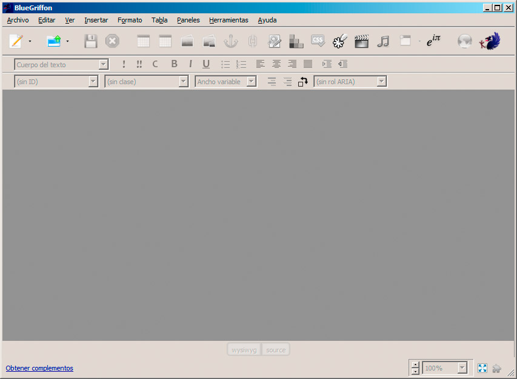
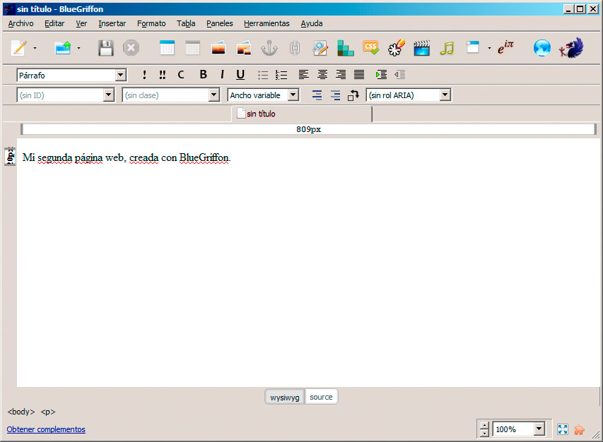
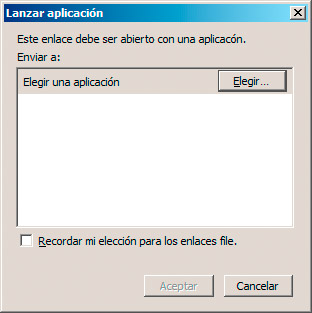
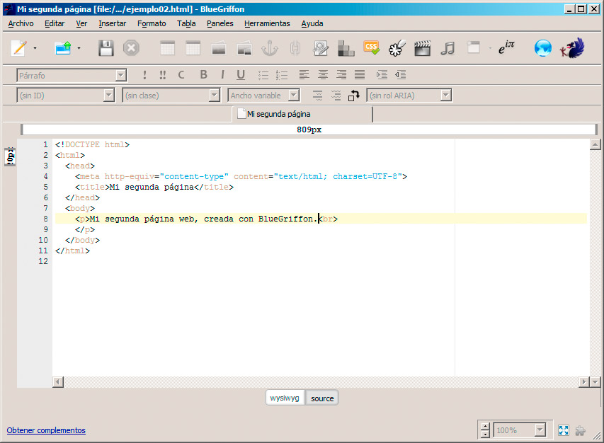
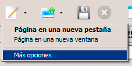
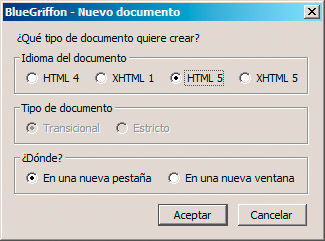

Los editores de páginas web nos evitarán los pasos más repetitivos y nos protegerán ante errores de escritura. En nuestro caso emplearemos el editor BlueGriffon. Al ejecutarlo, aparece como se muestra en la figura:

Para comenzar, haremos clic en el botón Nuevo Archivo. Aparecerá un espacio en blanco en el que podemos escribir el texto que queramos. Aquí no debemos escribir etiquetas; la aplicación se encargará de incorporarlas por nosotros.

Por último, guardaremos la página web con los métodos habituales. Al hacerlo, el programa nos pedirá que indiquemos un título para la página y a continuación que indiquemos el nombre del archivo.
Nota
El título, como vimos en el ejemplo anterior, es el nombre que se muestra en el navegador al visualizar la web. Al contrario de los nombres de archivo, puede contener espacios, tildes y todo tipo de caracteres.
Previsualizar la página web
Para mostrar la página web, podemos acceder a la carpeta en la que hayamos guardado la página o simplemente podemos hacer clic en el botón Vista previa en un navegador, en la parte derecha de la barra de iconos.
El resultado será el mismo, aunque la primera vez que mostremos una página web puede aparecer una imagen como la de la figura, en la que se nos pide que especifiquemos qué navegador queremos emplear.

Haciendo clic en el botón Elegir podremos seleccionar el navegador, buscando su archivo ejecutable entre las diferentes carpetas de nuestro ordenador. Este proceso no siempre es necesario y en todo caso sólo hay que hacerlo una vez.
Código y WYSIWYG
La principal ventaja de los editores de este tipo es que no es necesario desplegar el navegador para probar cada pequeño cambio que realicemos. Estamos trabajando con un editor visual, que va a intentar mostrarnos lo más fielmente posible la apariencia final de nuestra página web.
No obstante, este tipo de editores cuentan con la posibilidad de mostrarnos la página web tal y como se está creando, para que podamos modificar cualquier etiqueta que queramos, incrementando así su potencia y permitiéndonos mejorar nuestro conocimiento del lenguaje.
Si nos fijamos en la parte inferior, observaremos que hay dos botones, uno llamado wysiwyg que nos lleva a la versión visual, y el botón source, que nos muestra el código fuente de la página, es decir, todos los elementos HTML.

Esta visión del código nos va a resultar muy útil en estos primeros momentos, para ir analizando cómo varía la página web al incorporar nuevas etiquetas. Además, cuando seamos expertos diseñadores de páginas web, nos será igual de útil para añadir modificaciones difíciles de conseguir desde el editor visual.
Nota
El término wysiwyg es el acrónimo de What You See Is What You Get, que se traduce como “lo que ves es lo que obtienes”, en referencia a que la aplicación nos está mostrando la página como se mostrará después.
Tipos de archivo en BlueGriffon
Un último matiz por determinar es qué tipo de página web está generando BlueGriffon. Como sabemos, hay varios estándares diferentes y la aplicación es capaz de trabajar con todos ellos. Intentemos crear una nueva página web, pero en esta ocasión en lugar de hacer clic en el botón Nuevo Archivo seleccionaremos la pequeña flecha que aparece a su derecha. En el menú desplegable haremos clic en Más opciones.

El cuadro de diálogo que aparece nos indica qué tipo de página web estamos creando, entre XHTML y HTML. En nuestro caso generaremos páginas web basadas en el estándar HTML 5, por lo que seleccionaremos esa opción y haremos clic en el botón Aceptar.

De aquí en adelante, cada vez que hagamos clic en Nuevo Archivo, se creará una página de este tipo. Tendríamos que regresar a Más opciones para cambiar el modelo de páginas.
Modificar una página web
Avanzando un poco en la creación de la página, la forma habitual de trabajar será la de incorporar el texto que deseemos y a continuación ir aplicándole el formato necesario. En este sentido el editor BlueGriffon se comporta como cualquier otra aplicación del estilo. Podemos abrir y guardar cada página tantas veces como deseemos y aplicar las modificaciones que necesitemos. Observaremos cómo cada cambio se muestra, tanto en el panel de wysiwyg como en el de código fuente.
En el navegador podremos ver los cambios con tan sólo recargar la página web, para que éste muestre las últimas modificaciones.
Nota
Pregunta Verdadero-Falso
Verdadero Falso
Bluegriffon es un editor de lenguaje wysiwyg, una variante de código HTML5.
Verdadero Falso